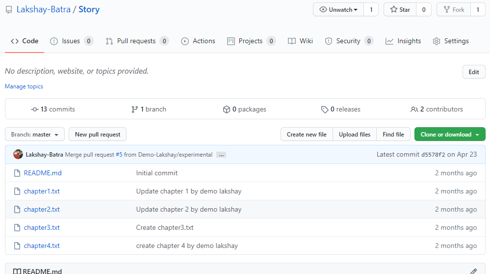
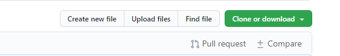
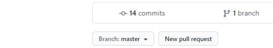
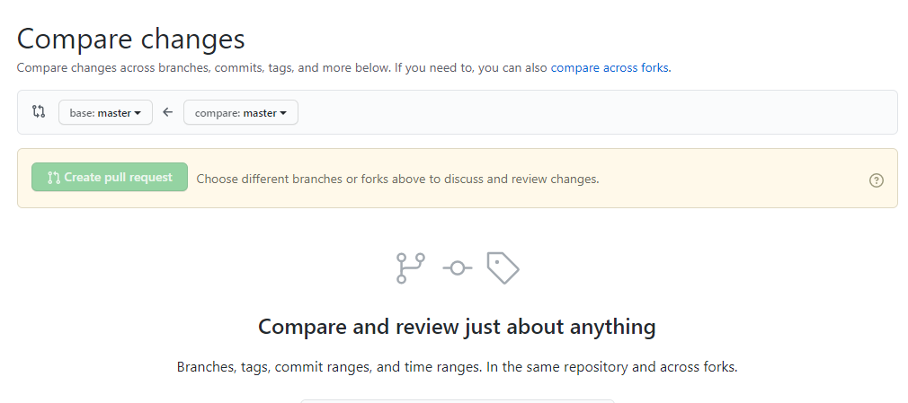
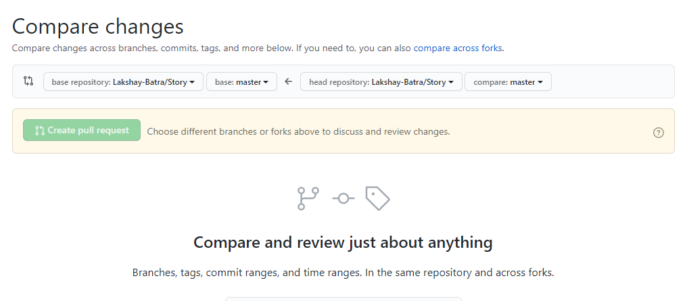
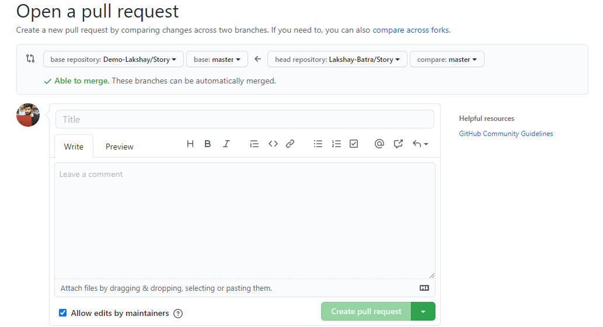

Prerequisites: basic knowledge of git and a GitHub account.
Open the repo you want to contribute to and click on fork option on the top right corner.
After forking you will be redirected to a page like this. Now you have your own version of that repo
To bring this repo to your local machine click on "Clone or Download" button and copy the repo url.

Choose a place at your local machine where you want to clone/place this repo folder.
Open git bash or any terminal of your choice inside that directory.
And run command $ git clone <url>
Now you will see your own copy of repo to be contributed on your local machine at the place you wanted it to be. Now you can simply perform as many changes as you want. Once done, follow steps below.
Add files to the staging area, perform a commit, and push the changes.
$ git add .
$ git commit -m "Commit message"
$ git push -u origin master
Now open the forked repo on GitHub. Click on "New pull request"
If you don't see the parent repo from where you forked from inside "base:" then click "compare across forks".
Select the parent repo inside the "base repository:".
Now you are all set to open a pull request. Give it a nice title and description and "Create pull request". If maintainer likes your contribution he'll merge your pull request.
